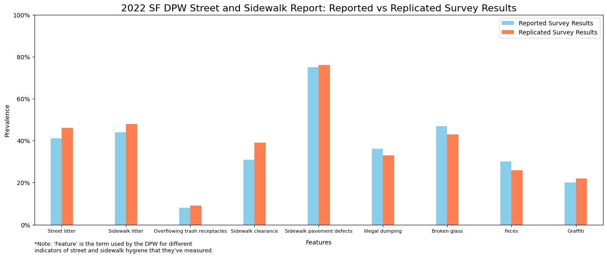

Nathan Torento
Data Scientist
Data Scientist based in SF with 1-2 years of marketing-focused data and programming experience at a tech startup and a real estate company. I have a B.S. in Data Science and am completing an M.S. in Business Analytics.
I believe in solving problems and making the world a better place through data and hard work centered on compassion.
Feel free to reach out to me at: hello@nathantorento.com
Portfolio Selection (WIP)
Python, Excel, Tableau, Data analysis, Data visualization
(More projects to be added in the next few weeks!)
2022 SF Sidewalk Cleanliness Report Replication and Extended Analysis

A replication and extension of the results to the “2022 Street and Sidewalk Report” conducted by the Department of Public Works (DPW) across San Francisco.
- Programming Languages: Python
- Tech Stack: Github, Colab, Jupyter Notebook
- Skills: Data wrangling, Data analysis, Data visualization, Replication study, Machine Learning
MBTI Classification with NLP

A text classification model that aims to determine the MBTI type of a user based on an example post.
- Programming Languages: Python
- Tech Stack: Github, Colab, Jupyter Notebook
- Skills: NLP, Data wrangling, Data analysis, Data visualization, Machine Learning, Model Optimization